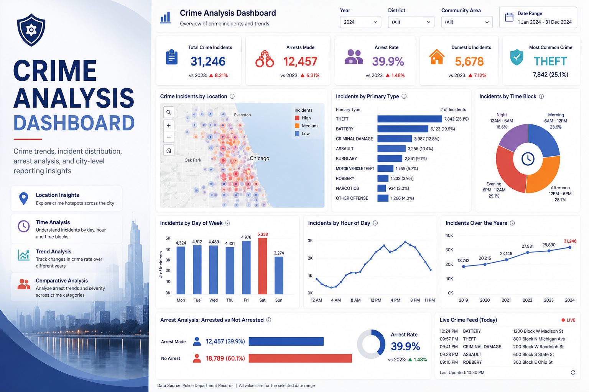
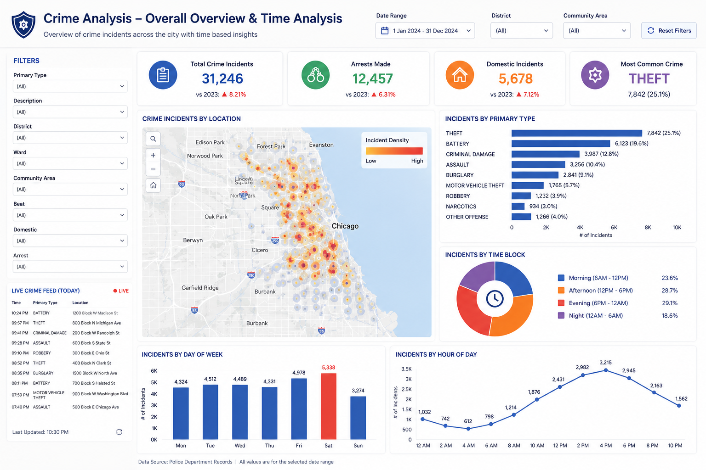
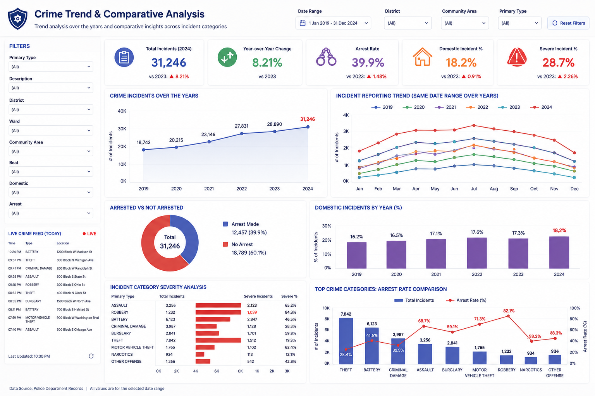

Crime Analysis Dashboard
Interactive Tableau dashboard built to analyze crime incidents across locations, time periods, and crime categories. The project combines overall crime statistics, hotspot mapping, time-based patterns, yearly trends, arrest analysis, and comparative reporting views to help uncover meaningful crime insights from incident-level data.

Project Overview
This Tableau project was designed to explore crime data through an interactive reporting dashboard that supports both high-level monitoring and detailed pattern analysis. The dashboard focuses on understanding crime volume, arrest behavior, domestic incidents, time-based crime patterns, and differences across crime categories and reporting periods.
To make the analysis more actionable, the dashboard combines KPI summaries with map-based incident views, time-block analysis, yearly trend tracking, and comparative charts. The goal was to create a single view where users can move from overall crime statistics to deeper insights around when, where, and how different crime incidents are occurring.
What the Dashboard Covers
Core Dashboard Modules
- Overall crime statistics and summary KPIs
- Crime hotspot analysis using map-based incident views
- Time period analysis by hour, day, and time block
- Yearly trend analysis for crime reporting patterns
- Comparative analysis of arrests, domestic incidents, and crime categories
Key Measures Tracked
- Total crime incidents
- Arrests made and arrest rate
- Domestic incidents
- Most common crime categories
- Incidents by location, day, hour, and year
- Category-level arrest and severity comparisons
Visual Highlights


Outcome & Takeaways
This project shows how Tableau can be used to turn crime records into an interactive decision-support dashboard by combining location analysis, time-based reporting, trend tracking, and comparative views in one place. Instead of looking at crime incidents as isolated records, the dashboard helps surface patterns in reporting volume, arrest behavior, domestic incidents, and category-level crime activity, making the data easier to explore and interpret from multiple perspectives.